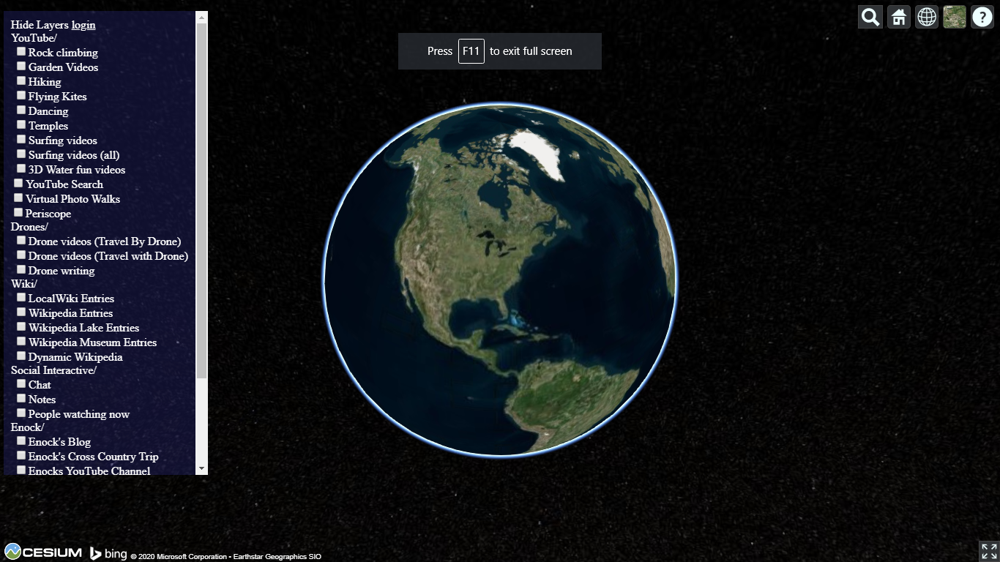
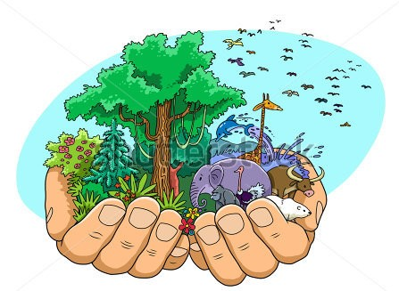

Welcome to WorldViews!

What is WorldViews?
WorldViews is an informal non-profit organization and set of related open source projects and activities, seeking to support all people in peacefully sharing our world by making it easier to connect, organize, share views of the world.

Televiewer
Our first project was TeleViewer, which is a digital earth supporting many different ways to see the world or any part of the world. These may be based on images, video, computer graphics, or live streamed views, telepresence robotic views, etc. It is inspired by Google Eath, StreetView and many great related projects, but we seek to build open source tools with core content in the creative commons. Our ultimate vision is to have free tools available to anyone to let them see the world or any part of the world in useful and inspiring ways.

Why was WorldViews created?
Contribute to a more connected and understanding world:
- Support easier sharing of views
- Reinforce that we are one human family sharing Earth
- Facilite virtual and real meeting between people
- Help spread inspiration
How?
We will facilitate the mission of WorldViews through company projects, community projects, and world projects.